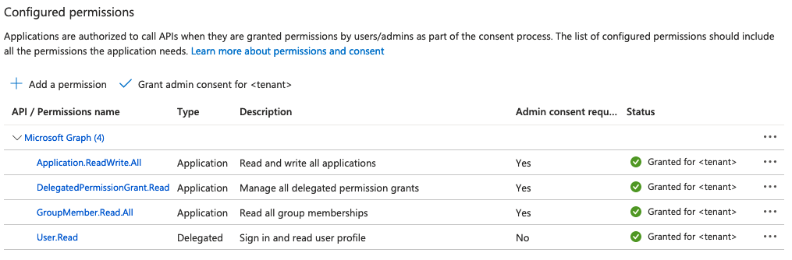

Azure AD¶
:fontawesome-brands-github: nais/azurerator creates and manages Azure AD applications via Kubernetes Custom Resources for use in various authentication scenarios.
This is an optional addon in NaaS. It is not enabled by default.
For Tenant¶
Requirements¶
To be able to use this addon, you will need to bring your own Azure AD tenant.
Unfortunately, we do not offer provisioning nor management of Azure AD itself as a service. The Azure AD tenant must be wholly owned and operated by your organization.
You will also need to set up a couple of things within said tenant. We'll guide you through the steps.
Google Service Accounts¶
Azurerator uses federated credentials in order to authenticate itself to your Azure AD tenant, by using tokens issued by Google. This removes the need to share client secrets between our organizations. The tokens are in turn only issued to Google Service Accounts that exist within the NAIS projects that we've created for your Google organization.
To set this up, you will need to find some identifiers from within your Google organization:
- Find the NAIS Google Project IDs:
- Use the
gcloudCLI:gcloud projects list --filter="nais-" - There should be one project ID for each environment;
nais-dev-xxxxandnais-prod-xxxx. Note these down.
- Use the
- For each project ID, find the unique Service Account ID for Azurerator:
gcloud iam service-accounts describe azurerator@<PROJECT_ID>.iam.gserviceaccount.com, wherePROJECT_IDis the ID found in the previous step.- Note down the
uniqueIdfor the service account. This ID uniquely identifies the Google Service Account that Azurerator uses in each environment.
Azure AD Application Registration¶
An Azure AD application registration within the tenant mentioned above is needed for Azurerator to create and manage application registrations within Azure AD.
- Sign in to your Azure Account through the Azure portal.
- Select Azure Active Directory.
- Select App registrations.
- Select New registration.
- Name the application, for example "azurerator".
- Supported account type doesn't matter, single tenant is fine.
- Leave Redirect URI empty.
- Under Overview, note down the values for the following fields:
- Application (client) ID.
- Directory (tenant) ID
- Navigate to Certificates and secrets.
- Select Federated credentials.
- Select Add credentials.
- Under Federated credential scenario, select Other issuer.
- Under Issuer, enter the value
https://accounts.google.com - Under Subject, enter the value for
uniqueIdthat you noted down from the previous section on Google Service Accounts. - Under Name, enter the value
nais-<environment>, for examplenais-devornais-prod - Leave the Audience at the default value, i.e.
api://AzureADTokenExchange - Repeat the steps starting from step 6 with the second
uniqueIdfrom the previous section on Google Service Accounts.
-
Navigate to API permissions.
- Select Add a permission.
- Select Microsoft Graph.
- Select Application permissions.
- The application needs the following permissions:
Application.ReadWrite.AllDelegatedPermissionGrant.ReadWrite.AllGroupMember.Read.All
- Add the permissions.
- Select Grant admin consent for <tenant name>.
- Confirm to grant the application access to the configured permissions.
If done correctly, the list of permissions should look like this:

Microsoft Graph Object ID¶
In order for Azurerator to pre-approve delegated API permissions for the managed applications, you will need to find the Object ID for the Microsoft Graph Enterprise Application that is unique to each Azure AD tenant.
- Sign in to your Azure Account through the Azure portal.
- Select Azure Active Directory.
- Select Enterprise applications.
- Filter the list of applications:
- Applicaton ID starts with == "00000003-0000-0000-c000-000000000000"
- Application type == "Microsoft Applications"
- You should see an application named
GraphAggregatorServiceorMicrosoft Graph. - Note down the Object ID for this application.
Application Access Groups¶
Azurerator creates Azure AD application registrations that are restricted by default:
- Users are not allowed access to the application unless they are explicitly given access.
- Access is granted by group membership; groups are assigned directly to applications.
- Users must be direct members of the groups, i.e. nested groups will not work.
You will need to define a group that contains all users in your tenant. The definition of "all users" is left for you to decide. This can for example be:
- all users, including guest accounts and machine users
- all users that are not guests in your tenant
- all users that have a valid license
- all users within a certain department, and so on
Refer to the following guides at Microsoft for details on groups:
The all users group will be assigned to any application that has enabled the allowAllUsers directive.
Note down the object ID for this group.
Once you've got through all of the above, provide the NAIS team with the following information:
| Property | Description |
|---|---|
| Tenant ID | See Azure AD Application Registration |
| Client ID | See Azure AD Application Registration |
| Microsoft Graph Object ID | See Microsoft Graph Object ID |
| Default All-Users Group Object ID | See Application Access Groups |
For NAIS¶
- Enter the required configuration for
azureratorin Fasit, using the information given by the tenant - Enable the
azureratorfeature in Fasit - Enable the
azureratorfeature withinnaiseratorin Fasit